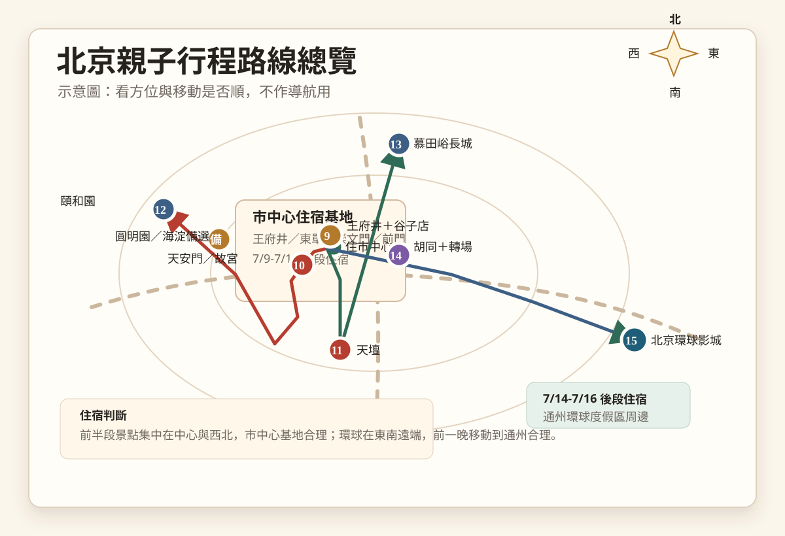
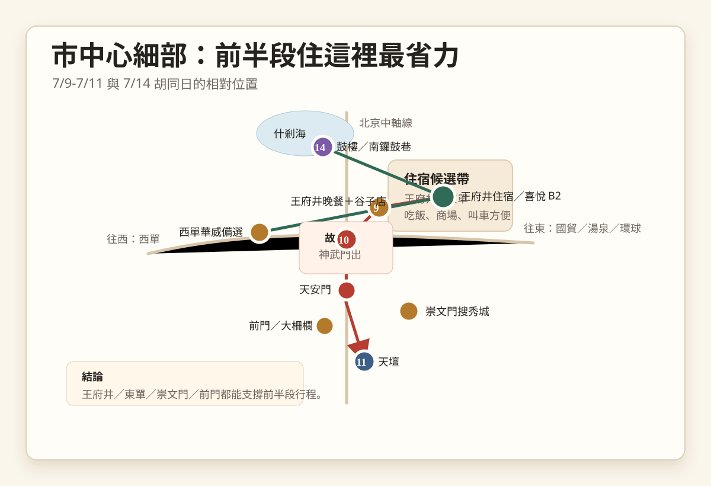
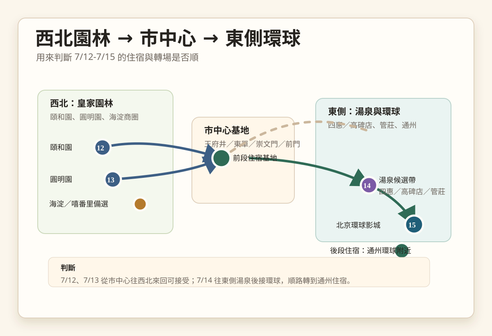

王府井開場
抵達日不奔波
入住市中心後只排晚餐、散步和王府井喜悅 B2。第一天先讓小朋友有期待，大人也不用硬跑景點。
每天一個主景點，搭配冷氣商場、谷子店、慕田峪長城親子體驗與環球影城。主方案採「市中心住宿 + 環球附近住宿」，減少暑假移動疲勞。
這版先把 ChatGPT 交接內容整理成可分享頁面。之後你從小紅書看到的特色行程，可以直接加到「專題亮點」或對應日期。
入住市中心後只排晚餐、散步和王府井喜悅 B2。第一天先讓小朋友有期待，大人也不用硬跑景點。
故宮、天壇、頤和園與長城都控制節奏，下午保留飯店或商場休息，避免 7 月北京太熱。
7/14 轉到通州，7/15 整天北京環球影城，不再從市中心來回，體力會差很多。
目前總額約 NT$119,476。已支付：機票、住宿。尚未下訂：北京環球票券。住宿逐晚金額相加為 NT$41,769，與暫定總額 NT$40,773 差 NT$996，待對帳。
| 類別 | 金額 | 付款狀態 | 備註 |
|---|---|---|---|
| 北京機票 | NT$44,459 | 已支付 | 3 人費用：Mike + 兩個小孩；Kelly 另用換票。去程 7/9 15:25-18:50；回程 7/16 20:20-23:40。 |
| 北京住宿 | NT$40,773 | 已支付 | 總金額暫定；逐晚明細加總待對帳。 |
| 北京環球 | NT$34,244 | 尚未下訂 | Trip.com 暫抓 5 項優速通 + 導覽服務 +《不可馴服》演出觀賞位。 |
| 總計 | 約 NT$119,476 | 部分已支付 | 機票 NT$44,459 + 住宿 NT$40,773 + 環球 NT$34,244。 |
| 日期 | 飯店 | 金額 | 早餐 | 取消期限 | 房型／連結 | 行程備註 |
|---|---|---|---|---|---|---|
| 7/9 週四 | 北京同潤飯店 | NT$4,297 | 含早餐 | 7/9 18:00 前 | 豪華雙床房（徠芬吹風機 + 智能馬桶 + 冷藏箱 + 智能客控） | 王府井 + 谷子店開場 |
| 7/10 週五 | 北京同潤飯店 | NT$4,297 | 含早餐 | 7/9 18:00 前 | 豪華雙床房（徠芬吹風機 + 智能馬桶 + 冷藏箱 + 智能客控） | 天安門 + 故宮 |
| 7/11 週六 | 北京同潤飯店 | NT$4,297 | 含早餐 | 7/9 18:00 前 | 豪華雙床房（徠芬吹風機 + 智能馬桶 + 冷藏箱 + 智能客控） | 天壇公園 + 崇文門／前門 |
| 7/12 週日 | 北京粵財 JW 萬豪飯店 | NT$7,602 | 含早餐 | 7/11 23:59 前 | 豪華雙床｜加寬床型 | 頤和園半日慢遊＋胡同輕鬆日 |
| 7/13 週一 | 北京粵財 JW 萬豪飯店 | NT$7,602 | 含早餐 | 7/11 23:59 前 | 豪華雙床｜加寬床型 | 慕田峪長城親子版 |
| 7/14 週二 | 環球影城大飯店 | NT$9,251 | 不含早餐 | 7/12 14:00 前 | 城市大道景觀雙大床房（送一小時提早入園） | 15:00 入住；隔天 08:30 入園 |
| 7/15 週三 | 北京通州環球度假區麗柏飯店 | NT$4,423 | 未標早餐 | 7/15 12:00 前 | 豪華雙床房（親子雙床 + 智能馬桶 + 太空主題 + 深泡浴缸） | 20:00 離開環球後接駁入住 |
| 平台 | 成人 | 兒童 | 一家四口 | 內容 |
|---|---|---|---|---|
| Trip.com | NT$8,808 × 2 | NT$8,314 × 2 | NT$34,244 | 5 項優速通 + 導覽服務 +《不可馴服》演出觀賞位 |
| Klook | NT$8,881 × 2 | NT$8,015 × 2 | NT$33,792 | 內容需下訂前再次確認是否同 Trip.com |
這些是方位示意圖，用來判斷住宿和移動方向是否順，不作導航用。等飯店確定後，可再把飯店點位加上去。

前半段集中在市中心，7/13 往北側慕田峪長城，7/14 轉場到通州環球附近。

王府井、天安門、故宮、前門、崇文門、天壇、西單與胡同區的相對位置。

頤和園從市中心往返；長城獨立一天，隔天再輕鬆移動到環球附近。
目前最推薦方案 B：前 5 晚住核心市區，最後 1-2 晚靠近環球。長城日用市中心飯店包車往返，隔天再移動到環球附近。
優先看王府井、東單、崇文門、前門。去天安門、故宮、天壇方便，晚上吃飯和叫車也簡單。
環球影城前一晚換到環球附近，7/15 早入園，晚上 CityWalk 吃飯後不用再長途回市區。
原則：上午主景點，中午後降溫休息，晚上只排商圈、餐廳或輕體驗。若當天太熱或下雨，優先刪下午戶外。
入住市中心，晚上王府井吃飯，安排王府井喜悅購物中心 B2，讓妹妹先有專屬亮點。
最重要的一天。走午門進、神武門出，下午回飯店回血；若體力好才加景山看故宮全景。
上午看祈年殿、圜丘壇、回音壁，下午用崇文門或前門商場休息，搜秀城可作谷子備選。
北宮門進，走蘇州街、長廊、石舫、昆明湖、十七孔橋，新建宮門出。可搭船減少步行。
長城是耗體力的郊區行程，建議包車從市中心往返，搭纜車上城牆，只走 1-2 小時精華段。
前一天已安排長城，這天只做短段胡同散步和轉場。什剎海、烟袋斜街、鼓樓外觀、南鑼鼓巷擇一段即可。
不排其他景點。哈利波特、變形金剛、功夫熊貓、小黃人、侏羅紀世界依入園狀況調整。
依航班或高鐵時間安排。時間充裕才逛 CityWalk 或飯店附近商場，不排大型景點。
以 Trip.com 目前看到的價格估算：成人門票 NT$2,638、兒童門票 NT$2,002；4 項與 6 項優速通套裝通常大小同價，且價格會依日期浮動，下單頁為準。
目前先抓「一般門票 + 4 項優速通套裝」作為預算基準。6 項只有在價差縮小，或小孩確定想玩更多刺激設施時才升級。
確認是否含門票、是否大小同價、包含哪些設施、是否綁台胞證、是否可退改。官方常見是 3/5/14 項，Trip.com 的 4/6 項多半是供應商包裝。
這裡留給家人快速理解「為什麼這趟不是只有古蹟」。小紅書看到的新行程也可以之後加在這一區。
7/14 不做深度文化考察，只把什剎海、烟袋斜街、鼓樓外觀、南鑼鼓巷當成散步和吃東西的緩衝日。前一天長城後，這天保留體力轉到環球附近。
首選王府井喜悅購物中心 B2。備選西單華威大廈 3-4F、崇文門搜秀城、海淀嘻番里。
交接檔未列具體店點，先放在王府井／SKP／國貿商圈擇一。訂飯店後再依住宿與餐廳動線決定，不為購物單獨拉長車程。
首選慕田峪長城：包車往返、纜車上、短段走、纜車或滑道下。小孩有體驗感，大人不會被交通和爬升拖垮。
下面這些是下訂飯店、門票與長城交通前要確認的點。尤其 2026 年 7 月規則仍可能變動，出發前要再查官方資訊。